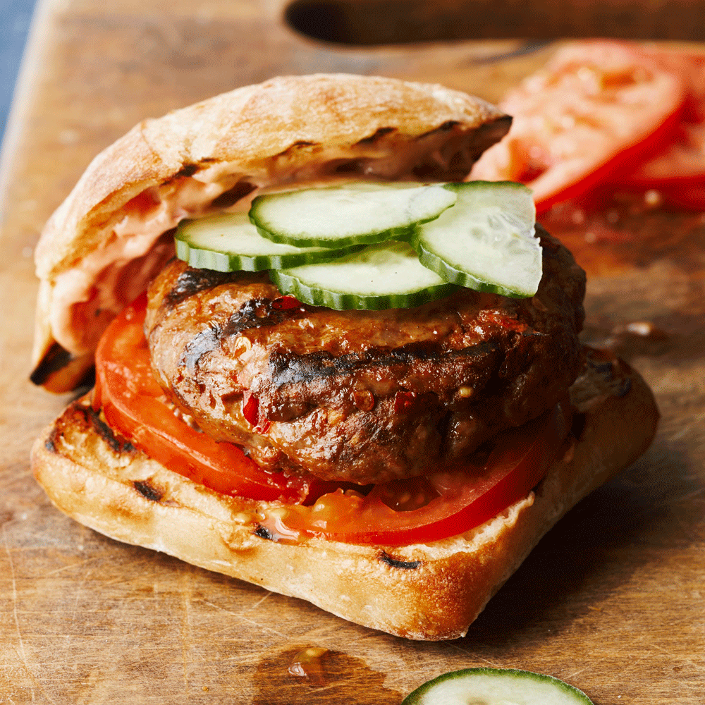

Lamb Merguez Sausage Patties Recipe

Merguez sausage is not commonly stocked at the grocery store, so I decided to come up with an easy home version. Enjoy!
To make merguez, lamb shoulder is ground, spiced, mixed with a little fat, and stuffed into sheep casings. This forms a small
sausage, usually about 4 inches long and less than an inch in diameter. Lamb merguez is commonly available as a fresh sausage,
though there are sun–dried versions in North Africa.
Ingredients
- 1 teaspoon salt
- ¼ teaspoon fennel seeds
- 1 teaspoon ground cumin
- ½ teaspoon ground cinnamon
- ½ teaspoon ground coriander
- ¼ teaspoon ground turmeric
- 3 cloves garlic, peeled
- 2 tablespoons harissa, or to taste (see Ingredient note)
- 1 tablespoon tomato paste
- 1 pound lean ground lamb
- 1 tablespoon olive oil
Steps
- Combine salt and fennel seeds in a mortar and pestle and pound until fine. Stir cumin, cinnamon, coriander, turmeric,
and garlic cloves into the salt mixture and continue grinding to form a thick paste. Stir in harissa sauce and tomato
paste until combined.
- Combine ground lamb and the spice paste together with a fork in a large bowl. Cover and refrigerate 8 hours to overnight.
- Form sausage into patties. Heat olive oil in a large skillet over medium-high heat. Cook patties until no longer pink inside,
5 to 8 minutes per side, depending on the size of the patties.
Cook's Note:
- To serve as burgers, top with sliced cucumbers, tomatoes, and crumbled feta in a toasted bun.
- This recipe calls for 2 tablespoons of Chef's John's Harissa Sauce recipe.
Return to top
Return to home page